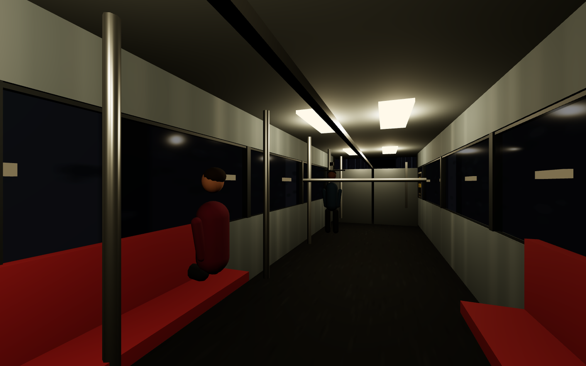
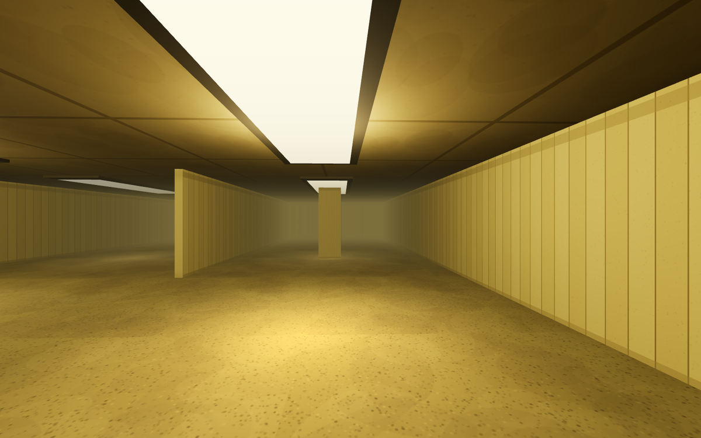
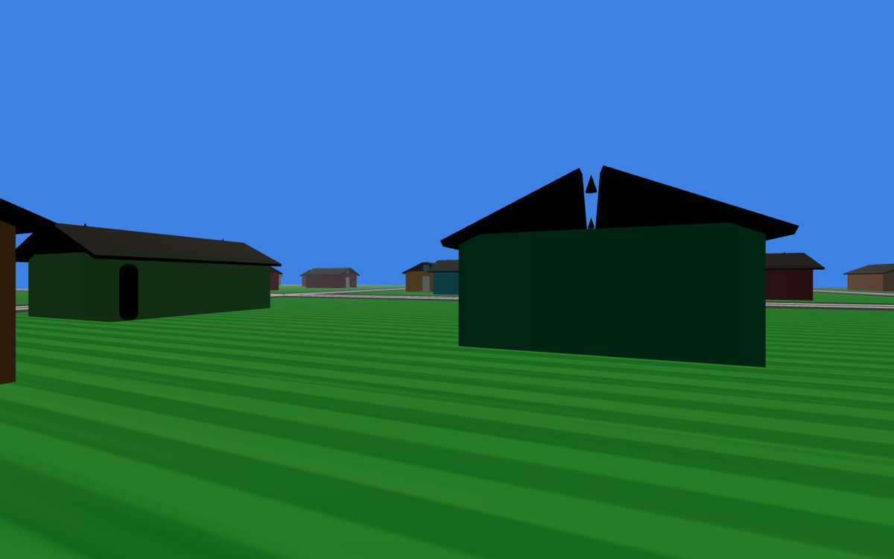
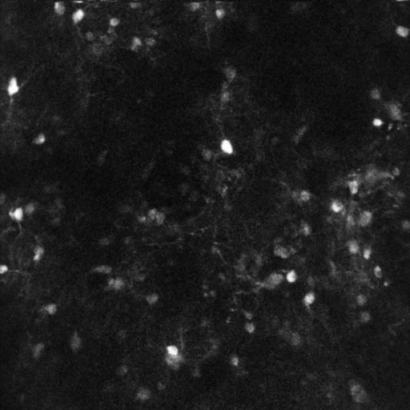
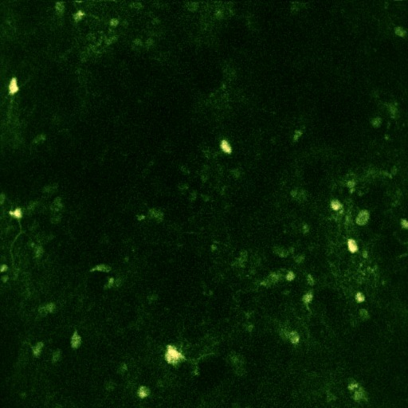
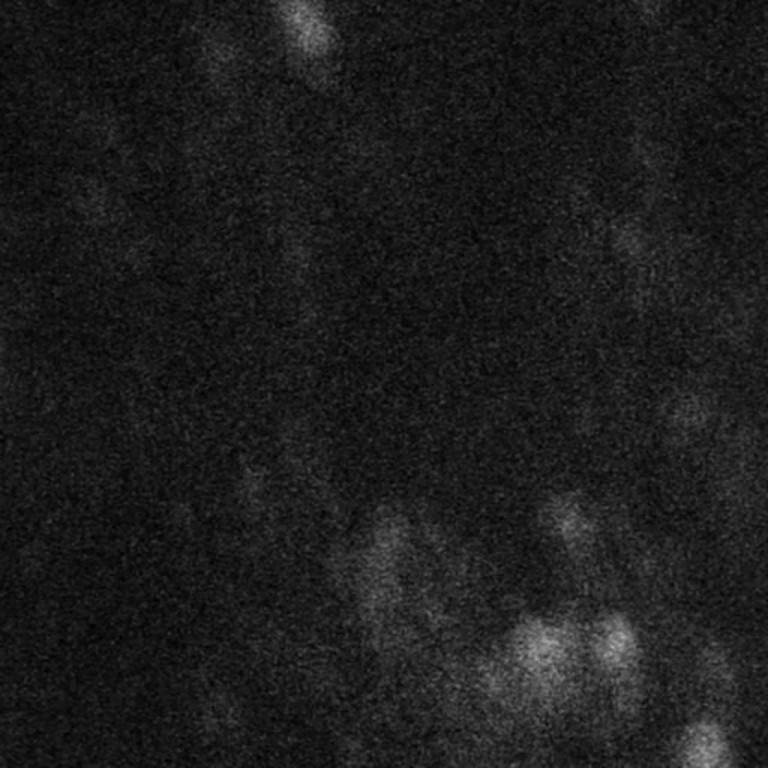

portfolio
ANA M
Ana Marinković (b. 1997) is a transdisciplinary artist, researcher, and independent critic working at the intersections of contemporary art, science, and technology. Her practice moves between artistic production such as video, performance, installation, and sound, and critical research into what it means to produce knowledge, to map a field, and to think beyond the human into anti-human.
- 01 this is a test cartography
- 02 the slop engine simulation
- 03 a test cartography derivation
- 04 cyberfairy's library fiction
- 05 liminality mechanisms paper & playable space
- 06 did you know that mice watch the matrix? imaging & sonification
↓ scroll to enter the works
works
six works · 2026Δ = 8 forced 02 the slop engine2026 simulation · presheaf test · canvas views 0 → 30
totalisable: no 03 a test cartography2026 derivation · closure · three views cl(R) = R ∪ … ∪ R⁵
no zero object 04 cyberfairy's library2026 fiction · iridescent visuals · live catalogue no walls · no shelves
point zero 05 liminality mechanisms2026 paper · playable space · four spaces no destination
the transition never completes 06 did you know that mice watch the matrix?2026 imaging · sonification · two voices events → notes
1062 s of visual cortex
04 — fiction & visuals · 2026
cyberfairy's library
the librarian in the space between the material world and the universe
What moved me most was not whether the Akashic records exist in a literal sense, but the suggestion that information does not need to be fixed to paper, buildings or devices to survive. That realization became the foundation of my own idea of a library. Future Libraries
She lives in the perfect space between the material world and the universe. She looks like a holy person from an intergalactic church. Dressed in modesty with wings and sunglasses.
Point Zero — Cyber FairyI envision the library somewhere in the clouds, at a precise distance between the material world and the universe, suspended in between, on a spectrum we are unable to perceive.
Future LibrariesNothing is forbidden in Cyber Fairy's library as the library is an infinite space without any physical borders.
Point ZeroThere are no walls, no shelves, no chairs and no designated reading spaces. Introducing walls into this kind of library would feel fundamentally wrong.
Future LibrariesThe library is also a graveyard of souls that got lured in but eventually given up, despite trying their best. Cyber Fairy preserves their souls like she preserves thoughts in her library.
Point ZeroI am both the creator of the library and its greatest threat. I am, ultimately, the enemy of my own library.
Future LibrariesBeing nothing is freeing. Nothingness is completely undetermined, it's neither scary nor good. It's the perfect point where I'm nothing at all, just a passenger soul in the making, or disappearing. That's where I'd like to be, indefinitely. Point zero.
Point Zero
the catalogue
Your unconscious chooses what you feel compelled to know. Click a thought to open its next tabs — the chain can continue endlessly, or you can pause it at any moment and return later.
- medium
- fiction · iridescent visuals · interactive catalogue · web
- texts
- Point Zero · Future Libraries
- visuals
- cyber-fairy land — slides 08–09
- status
- ongoing
05 — paper & playable space · 2026
liminality mechanisms
the fold, the grid, and the void
Transit cuts through striated space to open a temporary pocket of what Deleuze and Guattari call smooth space. For a certain amount of time, between point A and point B, you are off the grid.
The initial intuition drags us toward the linear: you enter at A, travel a corridor, exit at B as a slightly altered person. But B does not exist. There was only ever A, and B is just the other side of A. You can't see who you are becoming while you become it — identity is strictly retroactive.
Classic anthropology treated the in-between as a problem to be escaped. But coming into a stable position is also an enclosure: to settle into one state is to foreclose the others. To choose permanent liminality is to live an unscripted existence as something cathartic rather than a transitional crisis.
LIMINAL EXPRESS is the practice to that paper. You board and walk — the subway, the void, the backrooms, an endless suburbia — with no objective and no destination, looping. Walking these spaces aimlessly is the simulation of permanent liminality: the transition that never completes.
- paper
- Liminality Mechanisms: the Fold, the Grid, and the Void
- game
- LIMINAL EXPRESS — first person · browser · four spaces
- spaces
- subway · void · backrooms · suburbia
- controls
- WASD move · shift run · space jump · E open door · click to look
- status
- playable
the playable build is not public yet — the stills above are from it.





What internet lore turned into a horror scenario might just be a radical creative state.
06 — imaging & sonification · 2026
did you know that mice watch the matrix?
two-photon imaging of a mouse visual cortex, played back as music
A mouse watches thirty-second movie clips — ten of them, over and over, for eighteen minutes — while a two-photon microscope records the calcium activity of individual neurons in its visual cortex. Every bright cell is a neuron firing.
The recording is also a score. Each detected event in each cell becomes a note: the cell's position on the sensor sets its pitch, its trace sets the rhythm. Nothing is composed — the music is what the brain was already doing while it watched.
- data
- two-photon calcium imaging · mouse visual cortex
- experiment
- ESYB190 · 10 September 2026 · 1062 s
- stimulus
- 10 movie clips · 30 s each · repeated
- sonification
- events → notes · Cell Music — our own program, built custom
- collaboration
- Yannick Bollman
- status
- in progress
the twenty seconds above are an excerpt from the full ten-minute render — the same events, two voices, and a tempo control for when the cells run too fast.



colophon
Works, papers and code by Ana Marinković. Everything here is hand-written HTML, canvas and SVG — no frameworks, no build step.
01 this is a test — cartography · guidance: Edgar Venezuela, PhD
02 the slop engine — simulation
03 a test cartography — derivation · guidance: Edgar Venezuela, PhD
04 cyberfairy's library — fiction · visuals: cyber-fairy land
05 liminality mechanisms — paper & playable space · LIMINAL EXPRESS
06 did you know that mice watch the matrix? — two-photon imaging · sonification
contact
Barcelona, Spain
+34 666 202 843
anksye@tuta.io
ana.marinkovic@thenewcentre.org
ORCID 0009-0007-5562-3140
CV and full documentation on request.